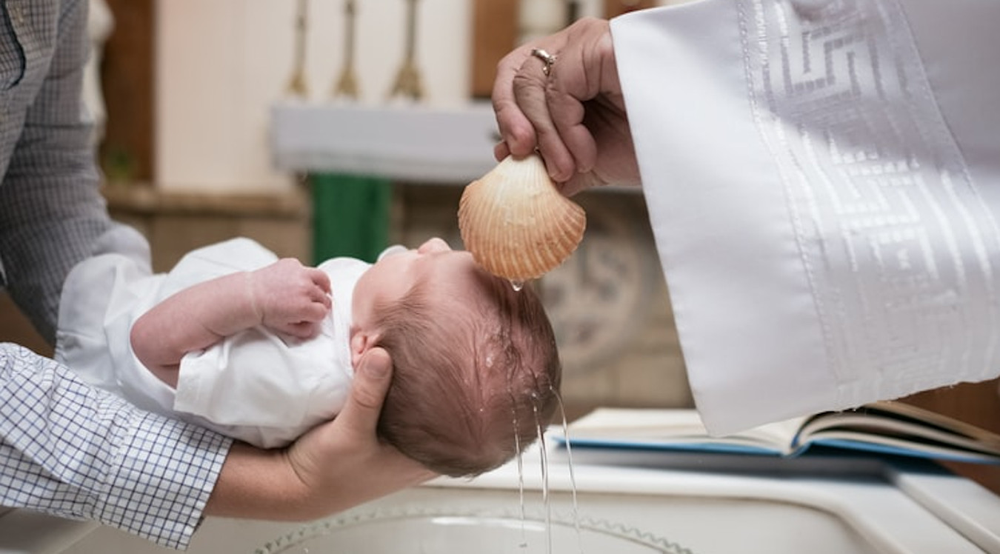

"Y ahora, ¿qué esperas? Levántate, bautízate y lávate de tus pecados, invocando su nombre."
Hechos 22:16
EL BAUTISMO, EL SACRAMENTO DE INICIACIÓN
Todos nacemos alejados de Dios por el pecado original, el cual fue cometido por nuestros padres Adán y Eva. El bautismo purifica nuestra alma y hace que renazcamos con el don de ser hijos del Padre y casa en la que habite el Espíritu Santo.
REQUISITOS PARA EL BAUTISMO
Padres
- Acudir al párroco o hacer una solicitud en línea.
- Solo ellos pueden llevar al bebé a bautizar.
- Presentar el acta de Nacimiento.
- Recibir las charlas prebautismales.
Padrinos
- Ser bautizados y confirmados.
- Tener la intención de asumir las responsabilidades.
- Ser mayor de 16 años.
- No estar en unión libre y llevar una vida de fe.
Adultos no bautizados
- Tener la intención de recibir el Bautismo.
- Tener fe y estar arrepentido de sus pecados.
- Asistir a charlas prebautismales y presentar acta de nacimiento.